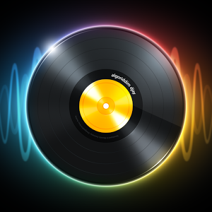

Round Icons
Graphic Design
Музика
Независимо дали слушате музика с камъни, къщи, техника или метали, тя вероятно е незаменима част от живота ви. Музиката е и една от най-динамичните и интересни категории във всеки магазин за приложения. Затова в следващите редове ще й обърнем внимание във всеки аспект.
MusiClock – Scales & Jamming (iOS)
От perTunes Oy
MusiClock трансформира сложната теория на музиката в един прост и мощен инструмент. С помощта на революционния дизайн можете да овладеете професионални тракове. MusiClock има множество функции и мелодии от различни жанрове. Изберете вашия любим жанр - поп, рок, хеви метъл или друг. Започнете да си играете с любимия си музикален стил за секунди.
Цена: 4.49 долара
Изтегли приложението от App Store
Харесай Добави в любими
The Best Song - discover music (Android, iOS)
От The Best Song
The Best Song е най-лесният начин да откривате хубава музика:
- Прелиствайте с пръст, за да откриете следващата си любима песен
- Слушайте най-добрите песни на приятелите си
- Получете препоръки от други любители на музиката (блогове, музиканти, медии и т.н.)
- Чуйте любимите си песни в Spotify, Deezer и социалните мрежи
- Амбицията на The Best Song е да създавате забавни и уникални класации, базирани на действителен избор от любители на музиката. Мислете за The Best Song като за Tinder за музика.
Цена: Безплатно
Изтегли приложението от App Store, Google Play Store
Харесай Добави в любими
Shazam Encore (Android, iOS, Windows)
От Shazam Entertainment Limited
Shazam е едно от най-популярните приложения в света, използвани от повече от 100 милиона души всеки месец, а сега Encore версията е достъпна и за българските потребители. С нея можете да откривате песни, тв предавания и ще се радвате на приложението без досадни реклами.
Цена: Безплатно
Изтегли приложението от Google Play Store, App Store, Windows Store
Харесай Добави в любими
Musyc Pro (iOS)
От Fingerlab
Musyc Pro е ново музикално приложение от Fingerlab, носител на наградата за дизайн на Apple за 2012 г. за DM1 - The Drum Machine. Musyc е забавно и иновативно приложение, в което докосването се превръща в музика. Насладете се на 88 инструменти (организирани в 22 групи), създадени и произведени в музикалното студио Fingerlab, както и всички вълнуващи и нови музикални инструменти, предоставени в Musyc.
Цена: 3,99 евро
Изтегли приложението от >App Store
Харесай Добави в любими
Relax Sounds (iOS)
От Michael Szumielewski
Relax Sounds е страхотно iOS приложение, което ще ви помогне да се отпуснете и да релаксирате след вашия напрегнат ден чрез приятни звуци от природата. Приложението е перфектният избор за медитация, йога и спане.
Цена: Безплатно (Предлага покупки в приложението)
Изтегли приложението от App Store
Харесай Добави в любими
Perfect Music (Android, iOS, Windows)
От Perfect Thumb
Perfect Music е перфектният начин да управлявате личната си музикална колекция на вашия Windows Phone. Слушайте музика по папка, албуми, музиканти, жанрове, любими, плейлисти, песни и последно слушани. Налични са и умни жестове за контрол. Поддръжка на FLAC, m4a, wma, wav, mp3 формати, търсене на текст и много други.
Цена: Безплатно
Изтегли приложението от Windows Store
Харесай Добави в любими
Podcasts (Windows)
От Microsoft Corporation
С официалното подкаст приложение от Microsoft само с няколко докосвания можете да търсите, да се абонирате и да слушате любимите си подкасти.
Цена: Безплатно
Изтегли приложението от Windows Store
Харесай Добави в любими

djay 2 (Android, iOS)
От Algoriddim
Готови ли сте да разтърсите следващото парти? djay 2 е следващото поколение на едно от най-продаваните DJ приложения, налично за Android и iOS. Djay 2 ще превърне вашето устройство в пълнофункционална DJ система. То безпроблемно се интегрира със Spotify и цялата локална музика на вашето устройство. Djay 2 ви дава директен достъп, за да смесвате любимите си песни и плейлисти незабавно. Можете да миксирате на живо или да активирате режима Automix, с който приложението автоматично ще създава миксове. Независимо дали сте професионален DJ или начинаещ, който просто обича да си играе с музиката, djay 2 ви предлага най-интуитивните и мощни DJ инструменти.
Цена: Безплатно
Изтегли приложението от Google Play Store, App Store
Харесай Добави в любими
edjing PRO - Music DJ mixer (Android, iOS)
От DJiT
DJ приложението edjing PRO е може би най-професионалната версия на мобилен софтуер за смартфони и таблети. edjing Pro е оптимизиран, както за Android смартфони и таблети, така и за iOS. Всички ефекти са отключени - няма реклама и няма скрити такси! edjing Pro е оборудван с най-новата саунд система на edjing, резултат от пет години на R&D, за да се осигури най-доброто DJ изживяване. Тази нова саунд система позволява точен анализ на музикалната честота, още по-добър beatmatching и нови звукови ефекти директно идващи от професионални DJ хардуери. edjing PRO е проектиран от и за професионални диджеи. На всичкото отгоре, ще имате достъп до повече от 50 милиона песни благодарение на директните стрийминг източници като Deezer и SoundCloud!
Цена: Безплатно
Изтегли приложението от Google Play Store, App Store
Харесай Добави в любими
Karaoke One (Windows)
От Lisari SRL
Karaoke One ви предлага най-доброто караоке изживяване с хиляди песни. Очакват ви MP3 и WAV студио записи, текстове на песни, страхотен дизайн, постоянни обновления, синхронизация... и много повече!
Цена: Безплатно (Предлага покупки в приложението)
Изтегли приложението от Windows Store
Харесай Добави в любими
- Последно обновени: Февруари 2016
- Категория: Приложения за музика